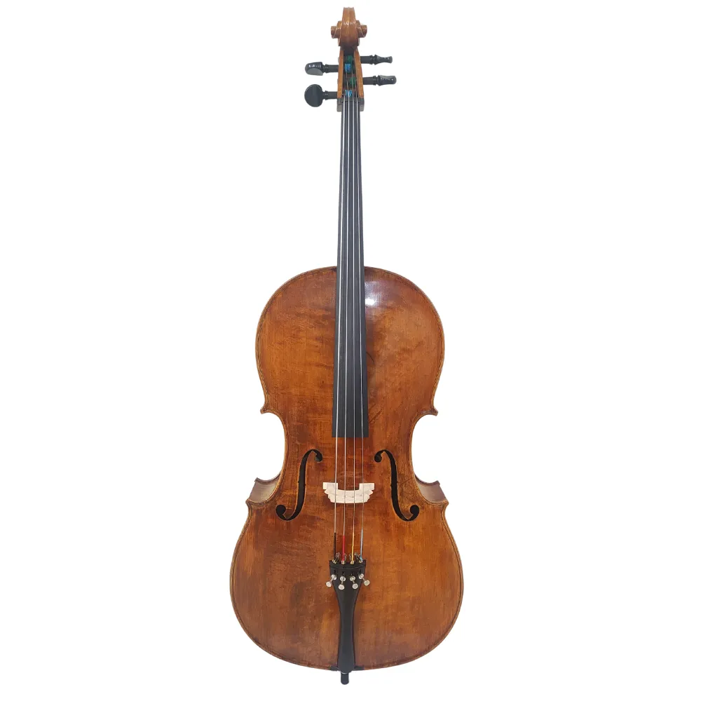

Cello
- Origem Italiana
- Yoyoma e Chines é considerado o melhor Violocelista do mundo
- Antônio Meneses Brasileiro de Recife, 2º melhor Violoncelista do mundo
- Kayami Satomi considerado o 7º melhor Violoncelista do mundo, foi Professor da UFU
- Toca-se em Quarteto de Cordas, Orquestra de Cordas, Orquestra Sinfônica, Orquestra Filarmônica, Orquestra de Cello e outros

Cello Acústico
 Cello Elétrico
Cello Elétrico
História do Cello
Clique Aqui!